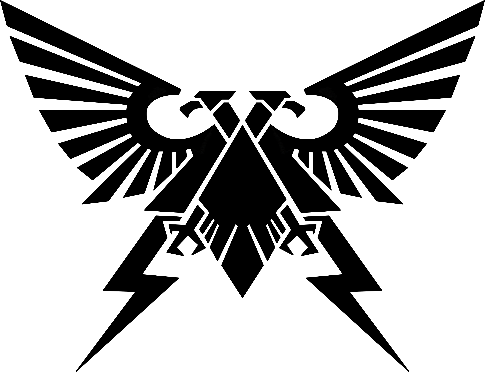

<!DOCTYPE html>
<html lang="en"></html>
<head>
<meta charset="UTF-8">
<link rel="stylesheet" href="Round2.css">
<title>Jeopardy! Warhammer Edition!</title>
</head>


<body style="background-color:#070c1d">
<div class="bigBox" id="fullContainer">

    <div class="bigBox" id="categories">
        <div class="smallBox" id="cat1">Main Character Syndrome</div>
        <div class="smallBox" id="cat2">Funny Nicknames</div>
        <div class="smallBox" id="cat3">Daddy Issues</div>
        <div class="smallBox" id="cat4">Xenoscum</div>
        <div class="smallBox" id="cat5">The Old Lore</div>
        <div class="smallBox" id="cat6">Noises of 40k</div>
    </div>
    <div class="bigBox" id="questions">
        <div class="column" id="column1">
            <button data-modal-target='#modal' class="question" id="col1Q1" 
            onclick="changeModel(mainCharacter.category,mainCharacter.question1,mainCharacter.points1),pointsChange(this)">100</button>
            <button data-modal-target='#modal' class="question" id="col1Q2"
            onclick="changeModel(mainCharacter.category,mainCharacter.question2,mainCharacter.points2),pointsChange(this)">200</button>
            <button data-modal-target='#modal' class="question" id="col1Q3"
            onclick="changeModel(mainCharacter.category,mainCharacter.question3,mainCharacter.points3),pointsChange(this)">300</button>
            <button data-modal-target='#modal' class="question" id="col1Q4"
            onclick="changeModel(mainCharacter.category,mainCharacter.question4,mainCharacter.points4),pointsChange(this)">400</button>
            <button data-modal-target='#modal' class="question" id="col1Q5"
            onclick="changeModel(mainCharacter.category,mainCharacter.question5,mainCharacter.points5),pointsChange(this)">500</button>
            
        </div>
        <div class="column" id="column2">
            <button data-modal-target='#modal' class="question" id="col2Q1"
            onclick="changeModel(funnyNicknames.category,funnyNicknames.question1,funnyNicknames.points1), pointsChange(this)">100</button>
            <button data-modal-target='#modal' class="question" id="col2Q2"
            onclick="changeModel(funnyNicknames.category,funnyNicknames.question2,funnyNicknames.points2), pointsChange(this)">200</button>
            <button data-modal-target='#modal' class="question" id="col2Q3"
            onclick="changeModel(funnyNicknames.category,funnyNicknames.question3,funnyNicknames.points3), pointsChange(this)">300</button>
            <button data-modal-target='#modal' class="question" id="col2Q4"
            onclick="changeModel(funnyNicknames.category,funnyNicknames.question4,funnyNicknames.points4), pointsChange(this)">400</button>
            <button data-modal-target='#modal' class="question" id="col2Q5"
            onclick="changeModel(funnyNicknames.category,funnyNicknames.question5,funnyNicknames.points5), pointsChange(this)">500</button>
            
        </div>
        <div class="column" id="column3">
            <button data-modal-target='#modal' class="question" id="col3Q1"
            onclick="changeModel(daddyIssues.category,daddyIssues.question1,daddyIssues.points1),pointsChange(this)">100</button>
            <button data-modal-target='#modal' class="question" id="col3Q2"
            onclick="changeModel(daddyIssues.category,daddyIssues.question2,daddyIssues.points2),pointsChange(this)">200</button>
            <button data-modal-target='#modal' class="question" id="col3Q3"
            onclick="changeModel(daddyIssues.category,daddyIssues.question3,daddyIssues.points3),pointsChange(this)">300</button>
            <button data-modal-target='#modal' class="question" id="col3Q4"
            onclick="changeModel(daddyIssues.category,daddyIssues.question4,daddyIssues.points4),pointsChange(this)">400</button>
            <button data-modal-target='#modal' class="question" id="col3Q5"
            onclick="changeModel(daddyIssues.category,daddyIssues.question5,daddyIssues.points5),pointsChange(this)">500</button>
            
        </div>
        <div class="column" id="column4">
            <button data-modal-target='#modal' class="question" id="col4Q1"
            onclick="changeModel(xenoscum.category,xenoscum.question1,xenoscum.points1),pointsChange(this)">100</button>
            <button data-modal-target='#modal' class="question" id="col4Q2"
            onclick="changeModel(xenoscum.category,xenoscum.question2,xenoscum.points2),pointsChange(this)">200</button>
            <button data-modal-target='#modal' class="question" id="col4Q3"
            onclick="changeModel(xenoscum.category,xenoscum.question3,xenoscum.points3),pointsChange(this)">300</button>
            <button data-modal-target='#modal' class="question" id="col4Q4"
            onclick="changeModel(xenoscum.category,xenoscum.question4,xenoscum.points4),pointsChange(this)">400</button>
            <button data-modal-target='#modal' class="question" id="col4Q5"
            onclick="changeModel(xenoscum.category,xenoscum.question5,xenoscum.points5),pointsChange(this)">500</button>
            
        </div>
        <div class="column" id="column5">
            <button data-modal-target='#modal' class="question" id="col5Q1"
            onclick="changeModel(oldLore.category,oldLore.question1,oldLore.points1),pointsChange(this)">100</button>
            <button data-modal-target='#modal' class="question" id="col5Q2"
            onclick="changeModel(oldLore.category,oldLore.question2,oldLore.points2),pointsChange(this)">200</button>
            <button data-modal-target='#modal' class="question" id="col5Q3"
            onclick="changeModel(oldLore.category,oldLore.question3,oldLore.points3),pointsChange(this)">300</button>
            <button data-modal-target='#modal' class="question" id="col5Q4"
            onclick="changeModel(oldLore.category,oldLore.question4,oldLore.points4),pointsChange(this)">400</button>
            <button data-modal-target='#modal' class="question" id="col5Q5"
            onclick="changeModel(oldLore.category,oldLore.question5,oldLore.points5),pointsChange(this)">500</button>
            
        </div>
        <div class="column" id="column6">
            <button data-modal-target='#modal' class="question" id="col6Q1"
            onclick="changeModel(noises.category,noises.question1,noises.points1),pointsChange(this)">100</button>
            <button data-modal-target='#modal' class="question" id="col6Q2"
            onclick="changeModel(noises.category,noises.question2,noises.points2),pointsChange(this)">200</button>
            <button data-modal-target='#modal' class="question" id="col6Q3"
            onclick="changeModel(noises.category,noises.question3,noises.points3),pointsChange(this)">300</button>
            <button data-modal-target='#modal' class="question" id="col6Q4"
            onclick="changeModel(noises.category,noises.question4,noises.points4),pointsChange(this)">400</button>
            <button data-modal-target='#modal' class="question" id="col6Q5"
            onclick="changeModel(noises.category,noises.question5,noises.points5),pointsChange(this)">500</button>
            
        </div>
    </div>


    <!-- put  data-modal-target='#modal'  in button to target specific modal -->
    <div class="questionModal" id="modal">
        
        <div class="frame" id="frameTopLeft"></img></div>
        <div class="frame" id="frameTopRight"></img></div>
        <div class="frame" id="frameTopCenter"></img></div>
        <div class="questionHead">
            <div class="questionCateg" id="catMod">This is the Category of the question</div>
            <button data-close-button class="close-button">&times;</button>
        </div>
        <div class="questionFull">
            <div id="questMod">This is the Question of the question</div>
            <div id="imgSource"></div>
        </div>
        <div class="questionFoot">
            <button class="resultButton" id="qCorrect" onclick="answerCount(),closeModal(modal)">NEXT</button>
            <div id="questPoints" onclick="playAudio(audio)"></div>
        </div>
        </img>
        </img>
        </img>
    </div>
    
    <div id="overlay"></div>
    <button class="roundButton" id="nextRoundBtn" onclick="changeButton()">Next Round</button></div>
<script>


const openQuestionButton = document.querySelectorAll('[data-modal-target]');
const closeQuestionButton = document.querySelectorAll('[data-close-button]');
const overlay = document.getElementById('overlay');

openQuestionButton.forEach(button => {
    button.addEventListener('click', () => {
        const modal = document.querySelector(button.dataset.modalTarget)
        openModal(modal)
    })
})


//click outside modal to exit
overlay.addEventListener('click', () => {
    const modals = document.querySelectorAll('.questionModal.active')
    modals.forEach(modal => {
        //closeModal(modal);
    })
})

//X button in modal to exit
closeQuestionButton.forEach(button => {
    button.addEventListener('click', () => {
        const modal = button.closest('.questionModal')
        closeModal(modal)
    })
})

//shows modal
function openModal(modal) {
    if (modal == null) return
    modal.classList.add('active')
    overlay.classList.add('active')
}

//hides modal
function closeModal(modal) {
    if (modal == null) return
    modal.classList.remove('active')
    overlay.classList.remove('active')
}

const imgSource = document.getElementById('imgSource');
const catMod = document.getElementById('catMod');
const questMod = document.getElementById('questMod');
const questPoints = document.getElementById('questPoints');
const changeModel = function(category,question,points,img){
    catMod.innerHTML = category;
    questMod.innerHTML = question;
    questPoints.innerHTML = points;
    //imgSource.innerHTML = img;
};


const smallBox = document.getElementsByClassName('smallBox');

const nextRoundBtn = document.getElementById('nextRoundBtn');

function nextRound(){
    if(col6Q1 == ''){
        console.log('it works')
        nextRoundBtn.style.visibility='visible';
    }
}

function pointsChange(element){
    console.log(element);
    console.log(element.innerHTML);
    const points = element.innerHTML;
    if(element.innerHTML){
        element.innerHTML = '';
    } //else if (element.innerHTML == ''){
        //element.innerHTML = points;
    //}
}

function changeButton(){
    window.location.href = 'Round2.html'
}
const qBox = document.getElementsByClassName('question').innerHTML;
const col6Q1 = document.getElementById('col6Q1').innerHTML;

function check() {
    console.log(col6Q1);
}

let answerCounter = 0;
function answerCount(){
    answerCounter+=1;
    console.log(answerCounter);
    if(answerCounter==30){
        nextRoundBtn.style.visibility='visible';
    }
}

//audio playing function
function playAudio(file){
    new Audio(file).play();
}

//objects for all info
const mainCharacter = {category: `Main Character Syndrome`,
question1: `Heir apparent to Chapter Master Marneus Calgar, this Captain of the Ultramarines is often lauded by his very own Primarch.`, answer1: `Cato Sicarius`, points1: `100`,
question2: `Beheld to each Chaos God individually, the first Daemon Prince of Chaos, he is the Dark Master.`, answer2: `Be'lakor`, points2: "200",
question3: `A manipulator of the Horus Heresy, an instigator of the Second War for Armageddon, and an exile of his own people, this Eldar Farseer is said to be over 10,000 years old.`, answer3: `Eldrad Ulthran`, points3: "300",
question4: `An honorable Nemesor who is aided by his faithful protector Obyron, this Necron overlord often suffers from a 'weakness of the flesh'.`, answer4: `Zahndrekh`, points4: "400",
question5: `From lowly slave to de-facto ruler, this leader of the Kabal of the Black Heart is also lord of Commorragh.`, answer5: `Asdrubael Vect`, points5: "500",
}
const funnyNicknames = {category: `Funny Nicknames`,
question1: `This term is used often when an Eldar refers to a human, regardless of trans-human status.`, answer1: `Mon-keigh`, points1: `100`,
question2: `An abhuman species that is sometimes thought of as Xenos, Humans often use this term when referring to the Kin of Votann.`, answer2: `Squat`, points2: `200`,
question3: `Prone to falling to Chaos, Imperial Citizens fear and often shun these animalistic Abhumans.`, answer3: `Beastmen`, points3: `300`,
question4: `Used by Orks often referring to any and all species, this phrase is usually prefaced with 'Oy!'.`, answer4: `Git`, points4: `400`,
question5: `After receiving numerous neural implants, an Ogryn may proudly refer to themselves as this.`, answer5: `Bone'ead`, points5: `500`,
}
const daddyIssues = {category: `Daddy Issues`,
question1: `Horus Lupercal was proclaimed Warmaster after the battle of Ullanor during the Great Crusade. Immediately afterward, Big E did this.`, answer1: `Abandoned the Great Crusade`, points1: `100`,
question2: `Magnus, hoping to warn his father psychically, accidentally broke this new shiny toy that Big E worked very hard on.`, answer2: `Webway Project`, points2: `200`,
question3: `Seeing that Angron would die if he did not intervene, Big E did this for his son (and only his son) while Angron fought with his slave brethren of Nuceria.`, answer3: `Teleported him away`, points3: `300`,
question4: `Perturabo was infuriated and felt slighted when Big E gave this job to his other son, Rogal Dorn.`, answer4: `Praetorian`, points4: `400`,
question5: `No longer tolerating his religious fanatacism, Big E sought to punish his most devoted son Lorgar by raising this city of the planet Khur. Dubbed as 'The Perfect City'.`, answer5: `Monarchia`, points5: `500`,
}
const xenoscum = {category: `Xenoscum`,
question1: `The Harlequin protect this 'Craftworld' that contains any and all of the Aeldari's most precious knowledge.`, answer1: `The Black Library`, points1: `100`,
question2: `In T'au Society, this caste maintains responsibilities such as farming, engineering, and scienctific research.`, answer2: `Earth Caste`, points2: `200`,
question3: `An Ork vehicle meant for speed, this racer comes equipped with a Mek Speshul gatling gun along with as many Burna Bottles as the crew can fit.`, answer3: `Boomdakka Snazzwagon`, points3: `300`,
question4: `This third or fourth generation Genestealer Hybrid serves as the primary war leader for their Cult.`, answer4: `Primus`, points4: `400`,
question5: `This matriarchal bio-form type of Tyranid can be linked to the creation of all known Tyranid species, reproducing through asexual means.`, answer5: `Norn Queen`, points5: `500`,
}
const oldLore = {category: `The Old Lore`,
question1: `Often reffered to as the Machine God by the Adeptas Mechanicus, this being is thought to be imprisoned beneath the surface of Mars.`, answer1: `C'tan Void Dragon`, points1: `100`,
question2: `This reptilian species are speculated to have created the races of Slann, Jokaero, Krork, and even the Eldar.`, answer2: `The Old Ones`, points2: `200`,
question3: `The Necrontyr underwent this process at the hands of Star Gods in order to achieve immortality, but at the price of their souls.`, answer3: `Biotransference`, points3: `300`,
question4: `This chaotic and highly fragmented age of humanity is often referred to as the 'Old Night'.`, answer4: `Age of Strife`, points4: `400`,
question5: `During the Unification Wars, the Emperor fought against nations of humans referred to as this.`, answer5: `Techno-Barbarians`, points5: `500`,
}
const noises = {category: `Noises of 40k`,
question1: '<button class="soundButton" id="imgSource" onclick="playAudio(noises.audio1)" ></button>', audio1: `Sounds/Waaagh.mp3`, answer1: `Waaagh`, points1: `100`,
question2: '<button class="soundButton" id="imgSource" onclick="playAudio(noises.audio2)" ></button>', audio2: `Sounds/Bolter.mp3`, answer2: `Bolter`, points2: `200`,
question3: '<button class="soundButton" id="imgSource" onclick="playAudio(noises.audio3)" ></button>', audio3: `Sounds/Sonic Gun.mp3`, answer3: `Sonic Gun`, points3: `300`,
question4: '<button class="soundButton" id="imgSource" onclick="playAudio(noises.audio4)" ></button>', audio4: `Sounds/Warlord_Titan.mp3`, answer4: `Titan Warhorn`, points4: `400`,
question5: '<button class="soundButton" id="imgSource" onclick="playAudio(noises.audio5)" ></button>', audio5: `Sounds/Plasma Gun.mp3`, answer5: `Plasma Gun`, points5: `500`,
}


</script>
</body>